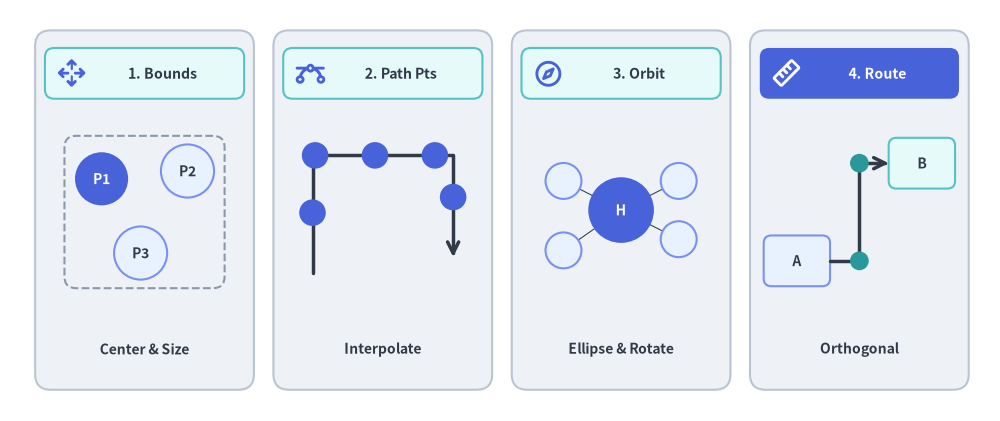
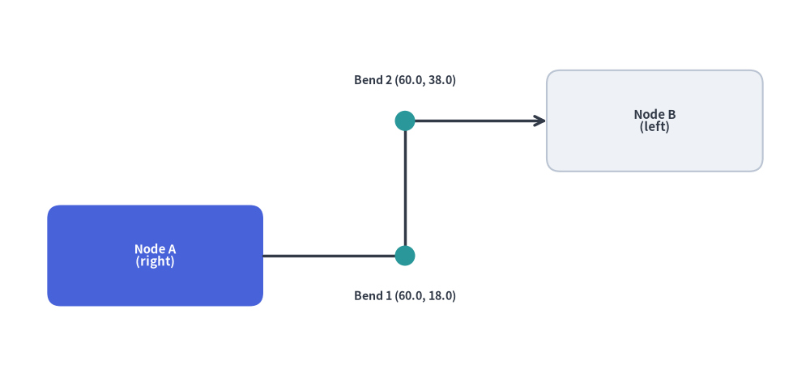
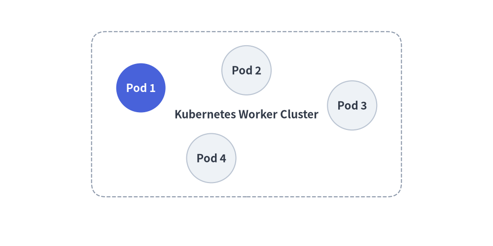
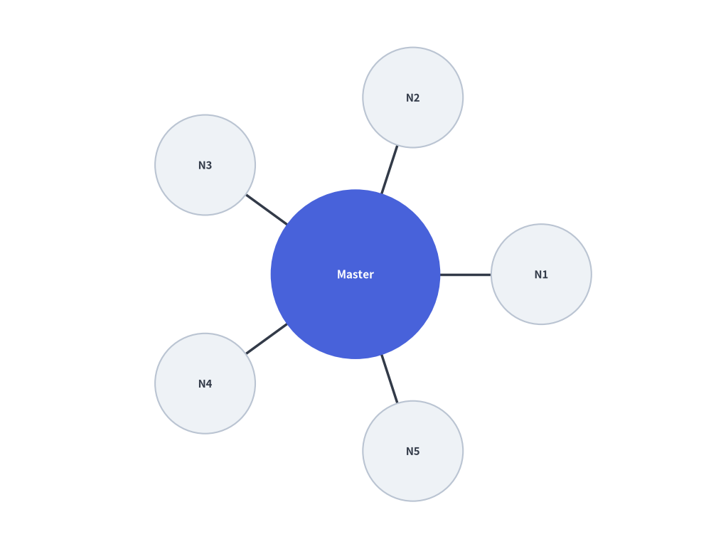
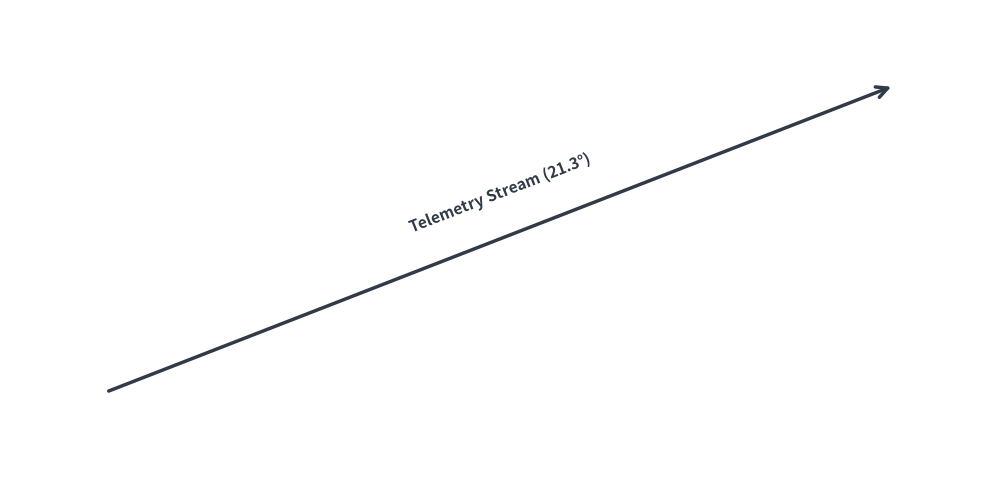

Mathematical Utilities & Dynamic Geometric Layouts (drawlib.math)
Drawlib provides geometric and mathematical calculation utilities to streamline coordinate positioning, angle derivations, distance measurements, and dynamic bounding box computations for technical diagrams.
The drawlib.math module provides four core geometric capabilities for algorithmic layouts and animations:

Source Code
from drawlib.canvas import save, setup
from drawlib.icons import phosphor
from drawlib.lines import line, lines
from drawlib.math import (
compute_orthogonal_path,
get_center_and_size,
get_intermediate_path_points,
get_point_on_ellipse,
rotate_point,
)
from drawlib.shapes import circle, rectangle
from drawlib.styles import Styles
from drawlib.text import text
setup(width=128, height=54)
# Panel 1: Dynamic Bounding Box (get_center_and_size)
rectangle((18.5, 27), width=28, height=46, style=Styles.Neutral.patch(shape_r=2.0))
rectangle((18.5, 44.5), width=25.5, height=6.5, style=Styles.SecondaryNeutral.patch(shape_r=1.2))
phosphor.arrows_out_cardinal((9.2, 44.5), width=3.8, style=Styles.PrimaryBold)
text((20.8, 44.5), "1. Bounds", style=Styles.DarkBold.patch(text_size=10.2))
pts = [(13.0, 31.0), (24.0, 32.0), (18.0, 21.5)]
(bcx, bcy), (bw, bh) = get_center_and_size(pts)
rectangle((bcx, bcy), width=bw + 9.5, height=bh + 9.0, style=Styles.MutedDashed.patch(shape_r=1.5))
for idx, pt in enumerate(pts, start=1):
st = Styles.PrimaryFlat if idx == 1 else Styles.PrimaryNeutral
tst = Styles.WhiteBold.patch(text_size=10.0) if idx == 1 else Styles.DarkBold.patch(text_size=10.0)
circle(pt, radius=3.4, style=st, text=f"P{idx}", text_style=tst)
text((18.5, 9.2), "Center & Size", style=Styles.DarkBold.patch(text_size=10.0))
# Panel 2: Polyline Path Interpolation (get_intermediate_path_points)
rectangle((49.0, 27), width=28, height=46, style=Styles.Neutral.patch(shape_r=2.0))
rectangle((49.0, 44.5), width=25.5, height=6.5, style=Styles.SecondaryNeutral.patch(shape_r=1.2))
phosphor.bezier_curve((39.7, 44.5), width=3.8, style=Styles.PrimaryBold)
text((51.3, 44.5), "2. Path Pts", style=Styles.DarkBold.patch(text_size=10.2))
poly = [(40.0, 19.0), (40.0, 34.0), (58.0, 34.0), (58.0, 21.0)]
lines(poly, style=Styles.DarkBold, arrow_head="->")
for px, py in get_intermediate_path_points(poly, num=5, include_ends=False):
circle((px, py), radius=1.7, style=Styles.PrimaryFlat)
text((49.0, 9.2), "Interpolate", style=Styles.DarkBold.patch(text_size=10.0))
# Panel 3: Radial & Elliptical Orbit (get_point_on_ellipse / rotate_point)
rectangle((79.5, 27), width=28, height=46, style=Styles.Neutral.patch(shape_r=2.0))
rectangle((79.5, 44.5), width=25.5, height=6.5, style=Styles.SecondaryNeutral.patch(shape_r=1.2))
phosphor.compass((70.2, 44.5), width=3.8, style=Styles.PrimaryBold)
text((81.8, 44.5), "3. Orbit", style=Styles.DarkBold.patch(text_size=10.2))
hub_xy = (79.5, 27.0)
sat_pts = [
get_point_on_ellipse(hub_xy, 18, 13, 35),
get_point_on_ellipse(hub_xy, 18, 13, 145),
rotate_point((88.5, 27.0), 215, center=hub_xy),
get_point_on_ellipse(hub_xy, 18, 13, 325),
]
for s_pt in sat_pts:
line(hub_xy, s_pt, style=Styles.DarkThin)
circle(hub_xy, radius=4.2, style=Styles.PrimaryFlat, text="H", text_style=Styles.WhiteBold.patch(text_size=10.0))
for s_pt in sat_pts:
circle(s_pt, radius=2.3, style=Styles.PrimaryNeutral)
text((79.5, 9.2), "Ellipse & Rotate", style=Styles.DarkBold.patch(text_size=10.0))
# Panel 4: Orthogonal Port Routing (compute_orthogonal_path)
rectangle((110.0, 27), width=28, height=46, style=Styles.Neutral.patch(shape_r=2.0))
rectangle((110.0, 44.5), width=25.5, height=6.5, style=Styles.PrimaryFlat.patch(shape_r=1.2))
phosphor.ruler((100.7, 44.5), width=3.8, style=Styles.WhiteBold)
text((112.3, 44.5), "4. Route", style=Styles.WhiteBold.patch(text_size=10.2))
rectangle(
(102.0, 20.5),
width=8.5,
height=6.5,
style=Styles.PrimaryNeutral.patch(shape_r=1.0),
text="A",
text_style=Styles.DarkBold.patch(text_size=10.0),
)
rectangle(
(118.0, 33.0),
width=8.5,
height=6.5,
style=Styles.SecondaryNeutral.patch(shape_r=1.0),
text="B",
text_style=Styles.DarkBold.patch(text_size=10.0),
)
route = compute_orthogonal_path(
start_pt=(106.25, 20.5),
end_pt=(113.75, 33.0),
start_side="right",
end_side="left",
routing="orthogonal",
offset=2.0,
)
lines(route, style=Styles.DarkBold, arrow_head="->")
for wx, wy in route[1:-1]:
circle((wx, wy), radius=1.2, style=Styles.SecondaryFlat)
text((110.0, 9.2), "Orthogonal", style=Styles.DarkBold.patch(text_size=10.0))
save()
1. Imports & Core Functions
All public math, interpolation, transformation, and routing utilities are imported from drawlib.math:
from drawlib.math import (
# Distance, Angle & Bounding Box
get_angle, # Calculate angle in degrees [0, 360) from point A to point B
get_center_and_size, # Compute center coordinates and bounding box dimensions
get_distance, # Compute Euclidean distance between two points
# Linear & Polyline Trajectory Interpolation
get_intermediate_point, # Compute the 50% midpoint between two points
get_intermediate_points, # Compute evenly spaced points along a straight segment
get_intermediate_path_point, # Compute 50% arc-length midpoint along a polyline path
get_intermediate_path_points, # Compute evenly spaced points along a polyline path
get_intermediate_paths, # Compute progressive partial sub-paths along a polyline
# Vector Arithmetic, Rotation & Ellipse Geometry
plus_2points, # Element-wise vector addition (x1 + x2, y1 + y2)
minus_2points, # Element-wise vector subtraction (x1 - x2, y1 - y2)
rotate_point, # Rotate a single point around a center by angle in degrees
get_rotated_points, # Rotate a list of points around a center by angle in degrees
get_rotated_path_points, # Rotate path points (including Bezier control tuples)
get_point_on_ellipse, # Calculate point on ellipse perimeter at a given angle
# Orthogonal Waypoint Routing
compute_orthogonal_path, # Compute right-angled or direct waypoints between two anchors
Side, # Literal["left", "right", "top", "bottom"]
RoutingType, # Literal["direct", "orthogonal"]
)
2. Function Specifications
2.1 get_angle(xy1, xy2) -> float
Calculates the counter-clockwise angle in degrees from point xy1 to point xy2:
- Reference: 0° points horizontally along the positive X-axis (East).
- Range:
[0.0, 360.0).- Point to the right:
0.0° - Point directly above:
90.0° - Point to the left:
180.0° - Point directly below:
270.0°
- Point to the right:
- Primary Use Case: Aligning text labels or rotating directional icons parallel to slanted connection lines.
2.2 get_distance(xy1, xy2) -> float
Calculates the Euclidean distance $\sqrt{(x_2 - x_1)^2 + (y_2 - y_1)^2}$ between two points:
- Primary Use Case: Determining line lengths, collision thresholds, and radial distribution spacing.
2.3 get_center_and_size(xys) -> tuple[tuple[float, float], tuple[float, float]]
Computes the geometric midpoint and outer bounding box dimensions for an arbitrary collection of coordinates:
- Returns:
((center_x, center_y), (width, height)). - Primary Use Case: Dynamically enclosing multiple service nodes inside an automated background container rectangle with uniform padding.
2.4 get_intermediate_point(xy1, xy2) & get_intermediate_points(xy1, xy2, num=1, *, include_ends=False)
Computes linearly interpolated coordinates between xy1 and xy2:
get_intermediate_point(xy1, xy2) -> tuple[float, float]: Returns the exact 50% midpoint(mx, my).get_intermediate_points(xy1, xy2, num=1, *, include_ends=False) -> list[tuple[float, float]]: Returnsnumevenly spaced intermediate points (ornum + 2points includingxy1andxy2wheninclude_ends=True).- Primary Use Case: Animating moving packets or progressively extending block arrows (
arrow(xy1, pt, ...)) and lines across frames.
2.5 get_intermediate_path_point(xys), get_intermediate_path_points(xys, ...) & get_intermediate_paths(xys, ...)
Computes trajectory-aware intermediate points and progressive prefix sub-paths along a multi-point polyline xys (such as L-shaped or U-shaped routes):
get_intermediate_path_point(xys) -> tuple[float, float]: Returns the coordinate at 50% of the total arc length alongxys(e.g., the center of the bottom bar of a U-shaped path).get_intermediate_path_points(xys, num=1, *, include_ends=False) -> list[tuple[float, float]]: Returnsnumevenly spaced(x, y)coordinates along the trajectory ofxys(ornum + 2points withinclude_ends=True).get_intermediate_paths(xys, num=1, *, include_ends=False) -> list[list[tuple[float, float]]]: Returnsnumprogressive partial coordinate lists[(x0, y0), ..., (xt, yt)]starting atxys[0], passing through all corners reached so far, and ending at the step's tip (plus the fullxysat the end wheninclude_ends=True). Ideal for growinglines(),lines_curved(), orarrow_polyline()along L/U trajectories.
2.6 Vector Arithmetic, Rotation & Ellipse Helpers
plus_2points(xy1, xy2)/minus_2points(xy1, xy2): Element-wise 2D coordinate addition(x1 + x2, y1 + y2)and subtraction(x1 - x2, y1 - y2).rotate_point(xy, angle, center=(0.0, 0.0)): Rotatesxycounter-clockwise byangledegrees aroundcenter.get_rotated_points(xys, center, angle)/get_rotated_path_points(path_points, center, angle): Rotates a list of polygon vertices or Bezier path control points aroundcenter.get_point_on_ellipse(center, width, height, angle): Computes the(x, y)boundary point on an ellipse of size(width, height)atangledegrees (0°= East,90°= North).
2.7 Orthogonal Waypoint Routing (compute_orthogonal_path)
Computes right-angled ("orthogonal") or straight ("direct") polyline waypoints connecting two anchor coordinates given their exit/entry boundary sides ("left", "right", "top", "bottom"):
from drawlib.canvas import save, setup
from drawlib.lines import lines
from drawlib.math import compute_orthogonal_path
from drawlib.shapes import circle, rectangle
from drawlib.styles import Styles
from drawlib.text import text
setup(width=120, height=56)
# 1. Draw anchor nodes (Node A right edge = 39.0, Node B left edge = 81.0)
rectangle(
(23, 18),
width=32,
height=15,
style=Styles.PrimaryFlat.patch(shape_r=2.0),
text="Node A\n(right)",
text_style=Styles.WhiteBold.patch(text_size=10.8),
)
rectangle(
(97, 38),
width=32,
height=15,
style=Styles.Neutral.patch(shape_r=2.0),
text="Node B\n(left)",
text_style=Styles.DarkBold.patch(text_size=10.8),
)
# 2. Compute orthogonal Z-bend waypoints
waypoints = compute_orthogonal_path(
start_pt=(39.0, 18.0),
end_pt=(81.0, 38.0),
start_side="right",
end_side="left",
routing="orthogonal",
offset=3.0,
)
# 3. Render orthogonal connector and intermediate bend markers
lines(waypoints, style=Styles.DarkBold, arrow_head="->")
for wx, wy in waypoints[1:-1]:
circle((wx, wy), radius=1.5, style=Styles.SecondaryFlat)
text((60.0, 12.0), "Bend 1 (60.0, 18.0)", style=Styles.DarkBold.patch(text_size=10.2))
text((60.0, 44.0), "Bend 2 (60.0, 38.0)", style=Styles.DarkBold.patch(text_size=10.2))
save()

3. Dynamic Automated Grouping Box
Using get_center_and_size(), you can calculate the exact boundary of a cluster of service nodes and draw an encompassing card behind them:
from drawlib.canvas import save, setup
from drawlib.math import get_center_and_size
from drawlib.shapes import circle, rectangle
from drawlib.styles import Styles
setup(width=96, height=52)
# 1. Define service node positions
nodes = [(20, 34), (48, 38), (76, 30), (40, 14)]
# 2. Calculate dynamic bounding box
(cx, cy), (bw, bh) = get_center_and_size(nodes)
# 3. Draw background container with +28 width and +20 height padding
rectangle(
(cx, cy),
width=bw + 28,
height=bh + 20,
style=Styles.MutedDashed.patch(shape_r=4),
text="Kubernetes Worker Cluster",
text_style=Styles.DarkBold.patch(text_size=11.0),
)
# 4. Render nodes
for i, (x, y) in enumerate(nodes, start=1):
st = Styles.PrimaryFlat if i == 1 else Styles.Neutral
t_st = Styles.WhiteBold.patch(text_size=10.8) if i == 1 else Styles.DarkBold.patch(text_size=10.8)
circle((x, y), radius=7.0, style=st, text=f"Pod {i}", text_style=t_st)
save()

4. Radial Circular Node Distribution
To distribute $N$ worker nodes symmetrically around a central hub:
import math
from drawlib.canvas import save, setup
from drawlib.lines import line
from drawlib.math import get_angle, get_distance
from drawlib.shapes import circle
from drawlib.styles import Styles
setup(width=88, height=68)
hub = (44, 34)
radius = 23
num_clients = 5
# 1. Draw spoke lines and surrounding worker nodes first
for i in range(num_clients):
angle_rad = 2 * math.pi * i / num_clients
node_xy = (hub[0] + radius * math.cos(angle_rad), hub[1] + radius * math.sin(angle_rad))
# Calculate connection angle and distance
dist = get_distance(hub, node_xy)
angle_deg = get_angle(hub, node_xy)
line(hub, node_xy, style=Styles.DarkBold)
circle(node_xy, radius=6.2, style=Styles.Neutral, text=f"N{i+1}", text_style=Styles.DarkBold.patch(text_size=10.8))
# 2. Draw Central Hub on top so spoke lines do not cross label text
circle(hub, radius=10.5, style=Styles.PrimaryFlat, text="Master", text_style=Styles.WhiteBold.patch(text_size=11.2))
save()

5. Slanted Connection Line Text Alignment
Align text labels parallel to angled lines using get_angle():
from drawlib.canvas import save, setup
from drawlib.lines import line
from drawlib.math import get_angle
from drawlib.styles import Styles
from drawlib.text import text
setup(width=92, height=44)
p1 = (10, 8)
p2 = (82, 36)
# Draw slanted wire
line(p1, p2, arrow_head="->", style=Styles.DarkBold)
# Calculate rotation angle and midpoint
angle = get_angle(p1, p2)
midpoint = ((p1[0] + p2[0]) / 2, (p1[1] + p2[1]) / 2 + 4.2)
# Render rotated text parallel to the connection
text(midpoint, f"Telemetry Stream ({angle:.1f}°)", style=Styles.DarkBold.patch(angle=angle, text_size=11.2))
save()
